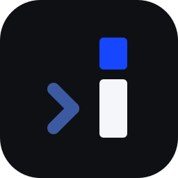

IVE
Ihre Coding-Agenten in einem Fenster.
Starten Sie Claude Code, Codex und Gemini auf Ihrem Mac. IVE zeigt die Sitzungen nebeneinander und macht sichtbar, wo Ihr Team gefragt ist.
Claude Code
Codex
Gemini CLI
OpenCode

IVEModellbeispiele
Claude Code
- Haiku
- Sonnet
- Opus
Ihr Zugang zu Claude Code bestimmt, welche Modelle Sie nutzen können.
Codex
- GPT
Codex zeigt die GPT-Modelle an, die für Ihr Konto verfügbar sind.
Gemini CLI
- Gemini Pro
- Gemini Flash
Die Gemini CLI nutzt die über Ihren Google-Zugang verfügbaren Modelle.
OpenCode
- Qwen
- Mistral
- Llama
Die Anbindung an IVE ist in Entwicklung. In OpenCode lassen sich diese Modelle über Ollama auswählen.